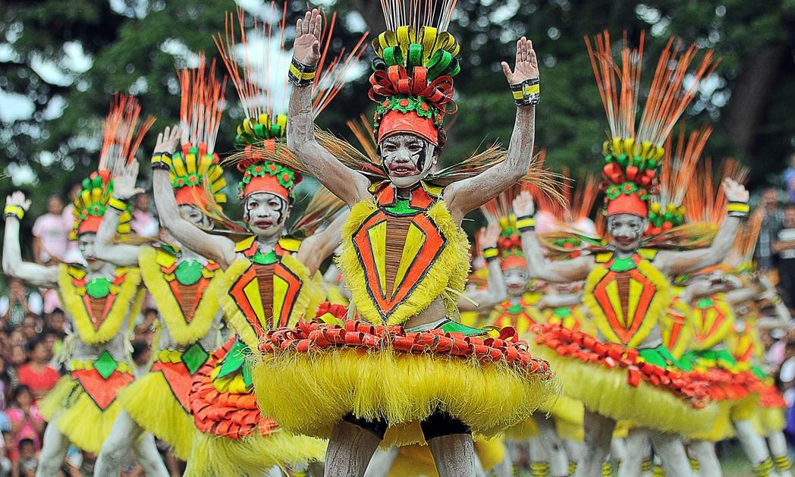
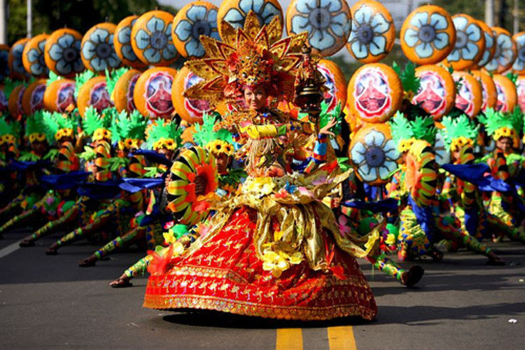

Celebrate culture, faith, and the sea at Siquijor's vibrant events


What to do at Salagdoong depending on the time of year
| Season / Month | Activity | Notes |
|---|---|---|
| November – February | Cliff Diving & Swimming | Peak dry season, calm seas |
| March – May | Snorkeling & Kayaking | Best visibility underwater |
| April (Holy Week) | Lubi-Lubi Festival & Island Exploring | Very crowded, book early |
| June – September | Limited activities (rainy/typhoon season) | Rough seas, cliff jumping may be closed |
| October | St. Francis Fiesta & Cultural Visits | Smaller crowds, pleasant weather |
🌊 Best Swimming Period: November through May offers the calmest waters and clearest visibility at Salagdoong Beach. Avoid visiting during typhoon season (June–October) when seas can be rough.